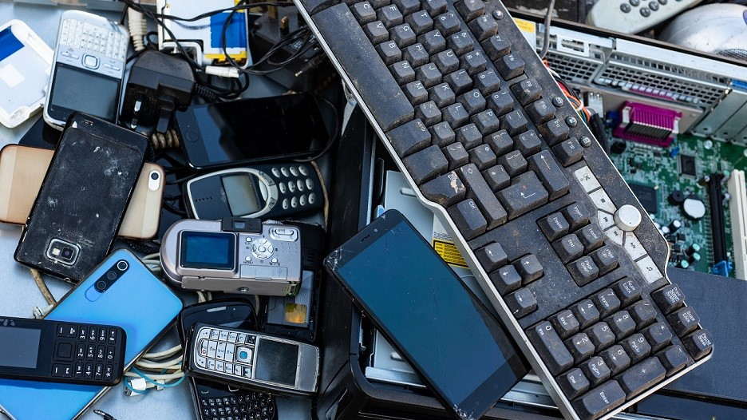

Hi-Fi Corporation
An electronics shop is a specialized retail store that offers a wide range of electronic products and gadgets, from the latest smartphones and laptops to home appliances and entertainment systems. These shops cater to tech enthusiasts, professionals, and everyday consumers seeking the latest in technology. With knowledgeable staff and hands-on product displays, customers can explore and compare various devices to find the perfect fit for their needs. Electronics shops often provide additional services like repairs, warranties, and tech support, making them a one-stop destination for all things electronic. Whether you're looking to upgrade your gadgets or find the newest innovations, an electronics shop offers a convenient and comprehensive shopping experience.
